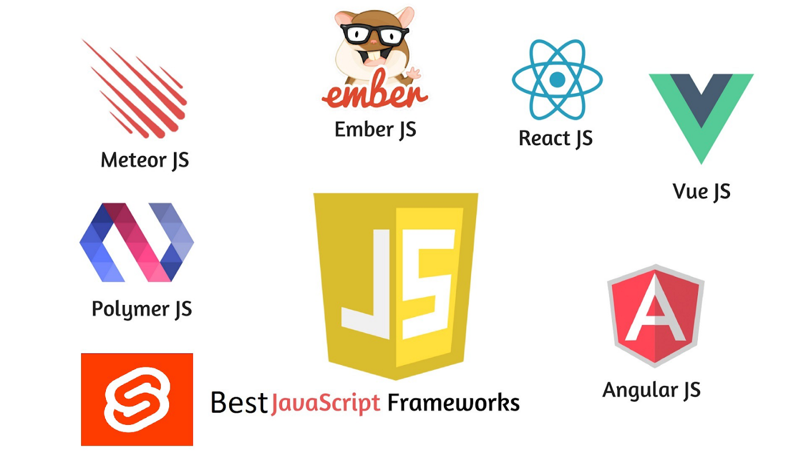

Para representar la línea azul punteada que hay sobre esta imagen es necesario la declaraciones de un identificador sobre la imagen,En este ejemplo el selector CSS (hr{) hace referencia a todas las líneas (<"hr">) de la página. En el caso de querer hacer referencia únicamente a una, la etiqueta <"hr"> tendría que tener un id para poder identificarla (<"hr id="borde1">) y el selector CSS sería: #borde1.
Existen dos formas para crear una línea separadora horizontal y una única forma para crear una línea separadora vertical.
Para crear una línea horizontal la forma fácil y rápida es utilizar la etiqueta <"hr">, que no se cierra y que crea una línea horizontal simple.
Esta etiqueta admite algunas características CSS como el grosor de la línea (border-width), la anchura (width), el color (border-color) o el tipo de línea (border-style).
BORDE CONTINUO
Para crear el borde continuo en esta imagen se utilizaron los siguientes comandos aplicados en la hoja
de estilos CSS a continuacuon se presentan los comandos :
width: 200px;
height: 220px;
text-align: left;
border-width:10px;
border-style: solid;
border-color: orange;
BORDE DISCONTINUO
Para conseguirlo simplemente tenemos que utilizar la propiedad de CSS "border-style", asignando el valor "dashed", crea una linea discontinua. Además, podemos definir otros valores al estilo de borde punteado, como puede ser el color del borde o el color.
Propiedas que se pueden aplicar :
Border-style: double; border-width: 4px;
Border-style: groove; border-width: 4px;
Border-style: inset; border-width: 4px;
BORDE BAJO RELIEVE

En el ejemplo se puede mostrar como cada uno de los bordes tiene un color diferente.
Las reglas CSS necesarias para mostrar los colores anteriores son las siguientes:
El estilo de los bordes sólo se puede indicar mediante alguna de las palabras reservadas definidas por CSS. Como el valor por defecto de esta propiedad es none, los elementos no muestran ningún borde visible a menos que se establezca explícitamente un estilo de borde.
Los bordes más utilizados son solid y dashed, seguidos de double y dotted. Los estilos none y hidden son idénticos visualmente, pero se diferencian en la forma que los navegadores resuelven los conflictos entre los bordes de las celdas adyacentes en las tablas.
Para establecer de forma simultánea los estilos de todos los bordes de una caja, es necesario utilizar la propiedad "shorthand" llamada border-style.